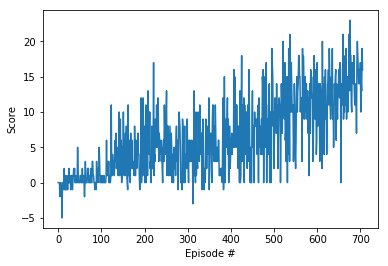
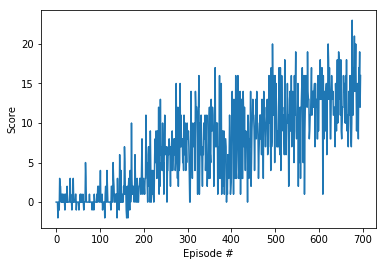

Algorithm and Architecture
The DQN algorithm involves using a neural network as the underlying function approximator. This function, called Q, is then used to select actions, using an epsilon greedy policy. A second Q function, known as the target network, is also used in order to avoid correlation when calculating the loss factor. DQN also utilizes a technique known as Replay Memory, which involves first storing the experiences, obtained from interacting with the environment, and later sampling them randomly and learning from them. This further minmizes correlation and stabilizies the performance of the model. To achieve our results, we used the following hyper parameters:- GAMMA = 0.99
- TAU = 1e-3
- LR = 5e-4
- UPDATE_EVERY = 8
- N_EPISODES=2000
- MAX_TIMESTEPS=1000
- EPSILON_START=1.0
- EPSILON_END=0.01
- EPSILON_DECAY=0.995
Double DQN
We also experimented with an additional improvement on the original DQN algorithm known as Double DQN or DDQN. Which in theory should prevent incidental high rewards that might not accurately reflect long term returns and stop q-values from exploding in early stages of learning. In our case, we simply edited our original model to instead choose action using our local network, then evaluate the selected actions using the target network. This resulted in a slight performance bump, as shown below.Code
Q Network
Agent
DQN
Environment solved in 606 episodes! Average Score: 13.03| Episode # | Average Score |
|---|---|
| 100 | 0.46 |
| 200 | 3.20 |
| 300 | 4.88 |
| 400 | 4.63 |
| 500 | 7.50 |
| 600 | 10.58 |
| 700 | 12.84 |
| 706 | 13.03 |

DDQN
Environment solved in 596 episodes! Average Score: 13.02
| Episode # | Average Score |
|---|---|
| 100 | 0.32 |
| 200 | 1.31 |
| 300 | 5.75 |
| 400 | 7.11 |
| 500 | 8.96 |
| 600 | 11.09 |
| 696 | 13.02 |
Obstacles & Future improvements
The next step would involve modifying the algorithm with the techniques such as Dueling DQN and Prioritized Experience Replay, as well as trying my hand at implementing the pixels to action version of the project. We would also like to experiment with the neural network architecture by changing the number of layers and neurons, and inspect how it would affect the output.